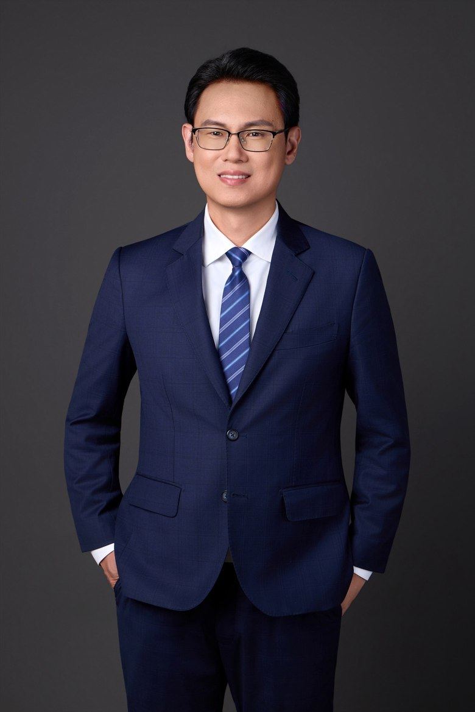

內線交易、財報不實、操縱股價、非常規交易、背信及銀行法等重大金融刑事案件之偵查與辯護策略。
以多年重大金融公訴與檢肅黑金專組實務經驗，協助釐清複雜金流與帳務，建構完整攻防。
詐欺、洗錢防制法遵循與案件協處，兼顧刑事風險控管與企業合規建置。
公司誠信治理、反貪腐與內控法遵，協助企業建立廉能與風險預防機制。
企業永續治理（ESG）、資訊揭露與法規遵循，因應永續資訊不實之刑事責任風險。
虛擬資產、VASP 監理法制與數位金融服務，提供前瞻性的法律定性與合規建議。
葉耀群律師現任合曜國際法律事務所品牌長暨數位金融部執行長，曾任臺灣士林地方檢察署主任檢察官，長年偵辦重大金融犯罪、公訴與檢肅黑金案件，對金融刑事與商業訴訟之偵審思維及裁判脈絡，具有深刻而全面之掌握。
葉律師兼具法律與會計雙碩士背景，並經法務部選送赴日本早稻田大學法務研究科擔任訪問學者，對比較法制、國際反毒與金融監理有系統性研究；亦長期擔任法務部司法官學院、金融研訓院、證券暨期貨市場發展基金會等機構講座，將偵查實務與學術研究相互印證。
近年葉律師聚焦於虛擬資產、數位金融服務與 VASP 監理法制，持續於《月旦財稅實務釋評》、《台灣銀行家》等專業期刊發表研究。本所秉持務實嚴謹的態度與專業思維，珍視每一次委任關係，在關鍵時刻為當事人量身打造最具整體效益之解決方案。
橫跨金融、貪瀆、詐欺、公共安全等領域之代表性案件。
＊為維護當事人隱私，案件當事人姓名均予隱匿。
以檢察官與律師的實務視角，分享面對法律問題時的關鍵提醒。
收到傳票不等於有罪。搞清楚身分、做好準備、在對的時機尋求協助，是面對偵查最重要的三件事。
閱讀全文